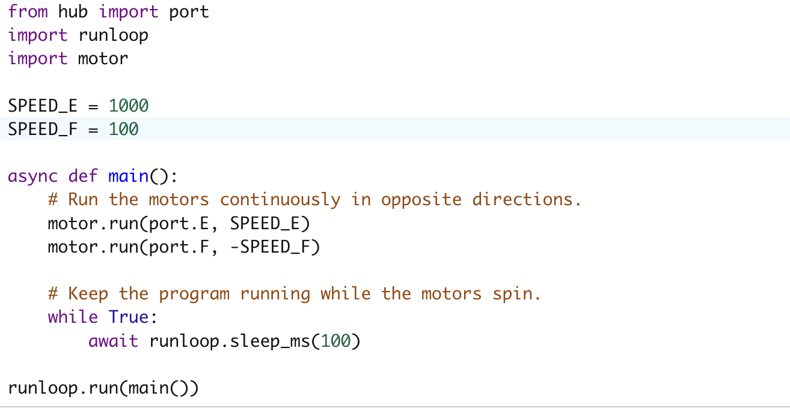

Project Portfolio


Project 5: Spirograph
The platform and the pen spun in opposite directions at different speeds. The platform rotated counterclockwise at 1/6 the speed of the pen, which spun clockwise. As the ratio increased, more interlocking ellipses were formed. On the other hand, as the ratio decreased, each shape became more rounded and there was less overlap.